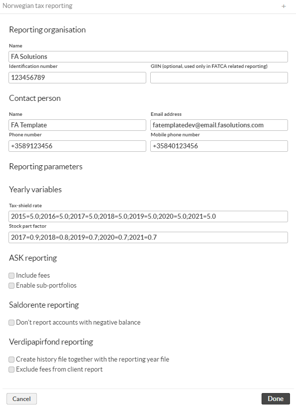
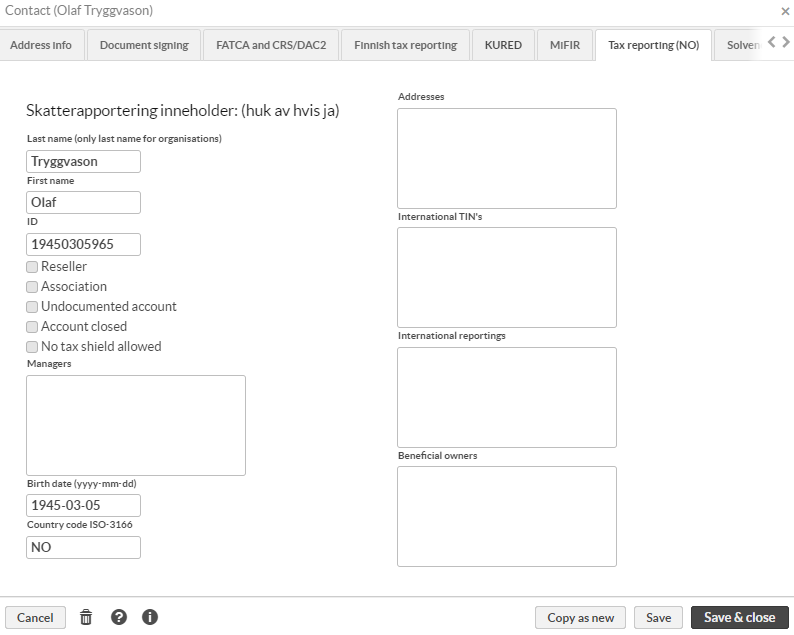
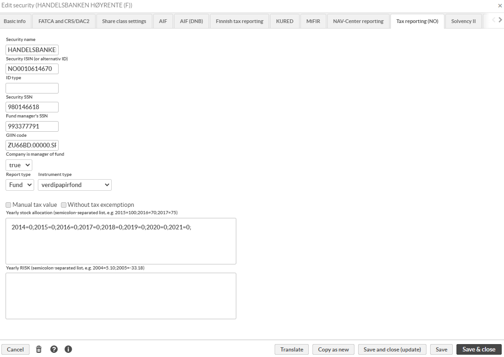
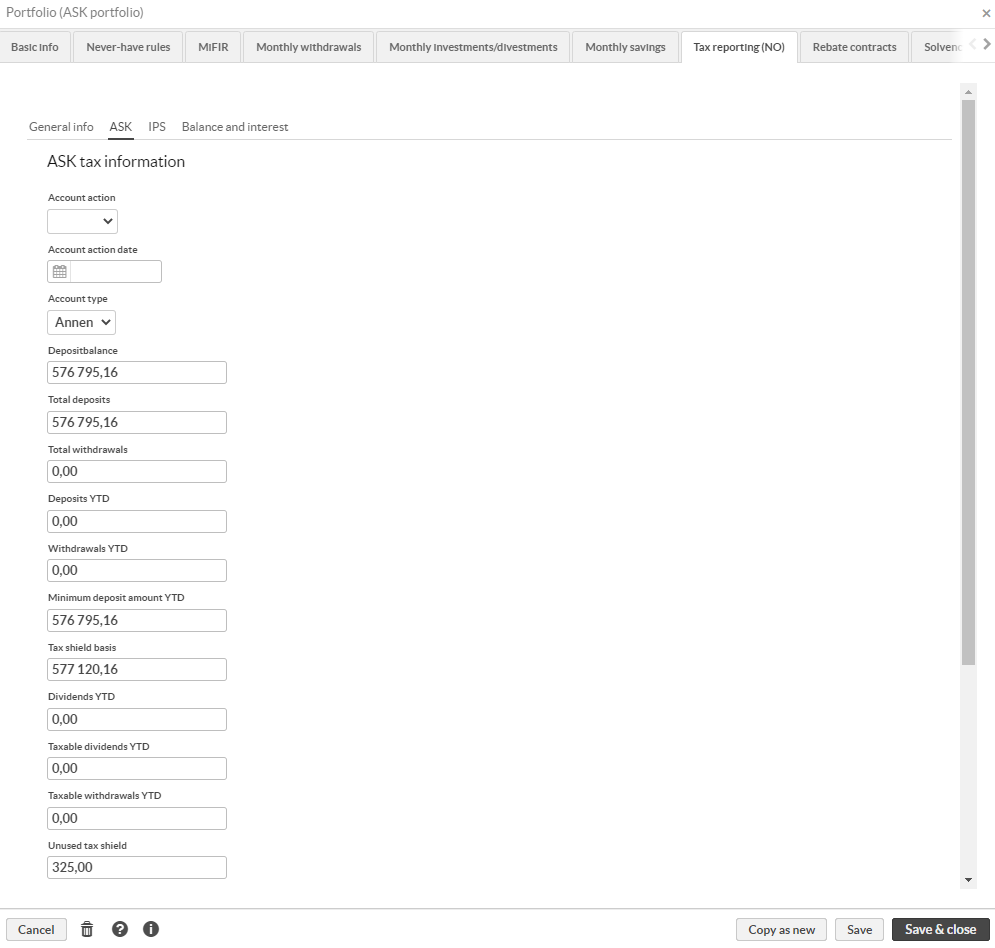

Create authority reports
Introduction
FA supports the generation of five different reports in XML format. After providing the background information, you can generate the reports directly in the format that the tax authorities expect.
Supported reports:
Aksjesparekonto, ASK, used to report share saving accounts.
Finansprodukter, used to report holdings in foreign securities.
Individuellepensjonsordninger, IPS, used to report pension saving accounts.
Saldorente, used to report account balances and received interests.
Verdipapirfond and Verdipapirfondshistorikk, used to report holdings in Norwegian funds.
More details about the reports can be found from the Norwegian tax administration (see Related links).
Getting started
Before you can run the reports, you need to set the reporting parameters and fill in tax information for entities to be reported.
Define general configurations for the reporting under Tools → Administer → Tax reporting → Norway.
Reporting organization:
Name – Full name of the reporting organization.
Identification number – Tax identification number of the reporting organization.
GIIN (optional) – Global Intermediary Identification Number of the reporting organization.
Contact person:
Name
Email address
Phone number
Mobile phone number
Reporting parameters:
Tax-shield rate – List of yearly values for skjermingsrente. Semi-colon separated list of key-value pairs. For example
2018=1.2;2019=2.3. Use dot as decimal separator in the value part.Stock part factor – List of yearly values for aksjeandel. Semi-colon separated list of key-value pairs. For example
2018=0.1;2019=0.2. Use dot as decimal separator in the value part.Important
These yearly values must be updated for each report year. Report cannot be run for years that doesn't have values defined. Values are provided by the tax administration.
ASK reporting:
Include fees – Choose if fees should be included in the generated report. If the checkbox is selected, fees are included in the report.
Enable sub-portfolios – Choose if ASK account can consist of one master portfolio and sub-portfolios. If the checkbox is checked, sub-portfolios are aggregated into the master portfolio in the generated report.
Saldorente reporting:
Don't report accounts with negative balance – Choose if accounts with a negative balance should be reported. If the checkbox is checked, accounts with a negative balance are not included in the report.
Verdipapirfond reporting:
Create history file together with the reporting year file – Choose if the history file, Verdipapirfondshistorikk, should be created together with the regular report file. If the checkbox is selected, history file is created.
Exclude fees from client report – Choose if fees should be excluded from the client report. If checkbox is checked, fees are not included in the client report.
Fill in the tax information in the Tax reporting (NO) tab under Contact window for all contacts that are included in the reporting.
 Required fields for individuals
Last name
First name
ID
Country code ISO-3166
Birth date (yyyy-mm-dd)
Required fields for organisations
Last name
ID
Optional fields
Reseller - Select if this contact is a reseller.
Association - Select if this contact is an association.
Undocumented account - Select if the account is undocumented.
Account closed - Select if the account is closed.
No tax shield allowed - Select if this contact is not allowed to any skjerming.
Managers - Contacts managing this particular contact. Information is entered as semi-colon separated list of Contact ID's, and all of these contacts must be found in the same system with valid tax information.
Addresses - Address(es) to be reported. Address entry is formed of two parts, country code and the address. Country code is given in ISO Alpha-2 format and address is printed as it's entered. If reporting several addresses, address block are separated by semicolon and therefor address cannot contain semicolons. Example: FI|Kotikatu 1, 00100 Helsinki, Finland;SE|Hemväg 1, 1234 Stockholm, Sweden
International TIN's - Tax identification numbers to be reported. TIN entry is formed of three parts, country code, TIN type and TIN number. Country code is given in ISO Alpha-2 format and TIN type can be either TIN or GIIN. Multiple TINs are separated by semicolon. Example: FI|TIN|020280-123T;SE|TIN|19800202123T
International reportings - Account types for international reporting. International reporting entry is formed of two parts, country code and account owner type. Country code is in ISO Alpha-2 format and account owner type can be one of the following: FATCA102, FATCA103, FATCA104, CRS101, CRS102, CRS103. Multiple values are separated by semicolon. Example: FI|CRS101
Beneficial owners - Beneficial owners of the company (organisations only). Owner block has two parts, Contact ID and rights type. Contact ID is only one value, but rights type can have multiple values. Rights type has two parts separated by equals character. Rights type first part is country code in ISO Alpha-2 format and second part is comma separated list. For beneficial owners to be reported correctly, tax information of the owner must be correctly filled in. Example: CONTACTID|NL=CRS801;CONTACTID|NL=CRS805
Fill in the tax information in the Tax reporting (NO) tab in the Security window for all securities.
 Required fields
Security ISIN (or alternative ID)
Optional fields
Security name
ID type - Type of the given security identification. This is usually ISIN.
Security SSN - Fund securities only, organisation number of the fund if the information is available
Fund manager's SSN - Fund securities only, organisation number of the fund manager if the information is available.
GIIN code - Fund securities only, Global Intermediary Identification Number of the fund if the information is available.
Company is manager of the fund - Fund securities only, define if the reporting company if the manager of the fund.
Report type - This applies only to Finansprodukter reporting, select OFP if security should be reported in Finansprodukter report.
Instrument type - This applies to Verdipapirfond and Finansprodukter reports. Select the type of the instrument.
Manual tax value - Not in use.
Without tax excemption - This applies to Verdipapirfond and Finansprodukter reports. Choose if security is reported without fritaksmetoden.
Yearly stock allocation - List of yearly stock allocation values. Semi-colon separated list of key-value pairs. Example: 2019=0.1;2020=0.2
Yearly RISK - List of yearly RISK values. Semi-colon separated list of key-value pairs. Example: 2004=20.1;2005=20.2
Report-specific preparations
In addition to the general configurations, some of the reports have individual options to be set and practicalities to take care of.
ASK
To generate a valid ASK report, you need to set Account type for all reported accounts in Tax reporting (NO)/ASK tab in the Portfolio window.
|  |
Excluding transactions
There can be situations when transactions in the portfolio should not be included in the reporting. In these cases, it's possible to exclude them from the report by using the "Norwegian tax-Exclude" transaction tag.
Account structure with sub-portfolios
If ASK reporting - Enable sub-portfolios option is selected in general configuration, make sure the portfolio setup is correct. Parent portfolio must be empty, and the report is run against the parent.
Important
While the report does the ASK tax status calculations each time the report is run, for performance reasons it will use the result of old calculations as the starting point. If there are changes in the historical transactions, full recalculations should be done before report is run, or the History data (do not edit) field on Tax reporting (NO)/ASK tab in the Portfolio window should be emptied.
Finansprodukter
To generate Finansprodukter report, you need to select the securities that are included in the report. To do this, set the Reporting type to OFP in the Tax reporting (NO) tab in the Security window.
Transferred assets
In some cases, transferred holdings do not have exact values available on the report date, and these cases must be reported differently. To flag these kind of transactions, they must be tagged with tag Zero profit in Finansprodukter report. If this tag is present in any of the transactions for a security in customer's portfolio within reporting period, profit for this customer/security combination is reported as 0 and there is no shield (skjerming) usage reported.
Excluding transactions
There can be situations when transactions in the portfolio should not be included in the reporting. In these cases, it's possible to exclude them from the report by using the Norwegian tax-Exclude transaction tag.
IPS
To generate a valid IPS report, you need to set Agreement number, Agreement type and Withdrawal for all reported portfolios in Tax reporting (NO)/IPS tab in the Portfolio window.
Excluding transactions
There can be situations when transactions in the portfolio should not be included in the reporting. In these cases, it's possible to exclude them from the report by using transaction tag Norwegian tax-Exclude.
Saldorente
To generate a valid Saldorente report, you need to set the Account type in Tax reporting (NO)/Balance and interest tab in Portfolio window.
Verdipapirfond
Verdipapirfond doesn't have any additional required steps, but there are some special cases that might require attention.
Excluding transactions
There can be situations when transactions in the portfolio should not be included in the reporting. In these cases, it's possible to exclude them from the report by using transaction tag Norwegian tax-Exclude.
Dividends on subscription date
In some cases, there is a possibility that fund units subscribed on the day X are also entitled to dividend on that same day X. If the subscribed units are entitled to same day dividend, add the Same day dividend tag to the subscription transaction. This way the units will be taken into account when the dividends are calculated.
Dividends in bond fund
Dividends in bond funds are reported separately in the Verdipapirfond report. Reported value consists of bought and sold interest, accrual, and dividends within the reporting period. Reported value cannot be negative, and negative accrual should be handled in advance with value adjustment transactions. Technically it should go so that the first purchase lot of the fund in question is adjusted with the full negative value before reporting. For example, if the negative accrual is -500 and size of the first purchase lot is 10, adjustment transaction should have trade amount of -500, amount 10 and unit price -50.
Acquisition and realization types
When assets are acquired or realized, the type is important from the taxation point of view. Default types are regular buy (kjoep) and regular realization (vanligRealisasjon), and they are used in report unless type is se to be something else. Type can be set with a transaction tag, and there are following options available under Norwegian tax tag:
Inheritance/gift (arvGaveTilAndreEnnEktefelleEllerSamboer)
Inheritance/gift to partner (arvGaveTilEktefelleEllerSamboer)
Non taxable realization (ikkeSkattbarRealisasjon)
Transfer (overfoering)
Divorce (skilsmisse)
Undivided estate (uskifte)
Move to ASK (this is for transfer transactions when asset is moved to ASK portfolio)
Generating XML reports
To generate a report:
Navigate to the Portfolios view and choose the portfolios to include in the report.
If you are for example reporting ASK accounts, choose only ASK portfolios (and only master portfolios in sub-portfolio setup)
To make it easier to report, you can create groups to have portfolios grouped by report type.
Click Tax reporting → Norway → Generate report. The Reporting parameters window appears.
Enter reporting parameters:
Report type – Type of the report to generate
Reporting scope (only for type Verdipapirfond) – Select whether the scope should be customer reporting or reseller reporting
Reporting year – The year to be reported
Click Continue. The View files window shows generated files. The filename consists of report type name, reporting year and running sequence number. If there are errors in the report, the error files are attached.
Complete the process by clicking Cancel or Done. If you click Cancel, the sequence number is not saved and the next report will be generated with the same sequence number.